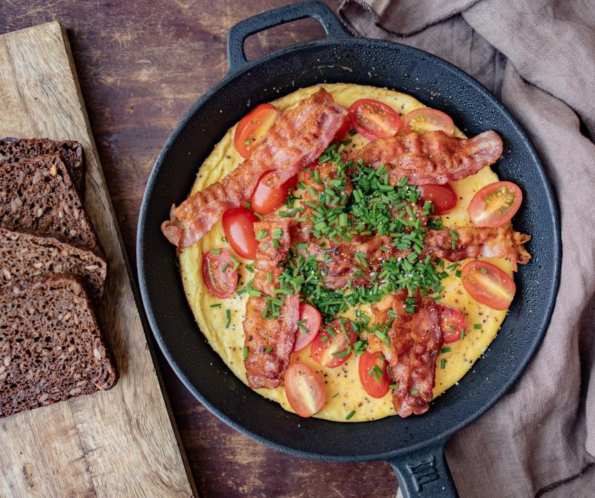

Æggekage is a traditional Danish egg-based dish that resembles an omelet or a thick pancake. It consists of a mixture of lightly beaten eggs, milk, and flour, which is poured in a skillet and topped with various condiments. The dish is usually finished in the oven until the top is completely set and a light golden crust appears on the edges.
Meal prep time : 30 minutes
Servings : 4